Klassendiagramm
Lernziele
- Verstehen, warum Klassendiagramme das wichtigste Werkzeug für die Planung objektorientierter Software sind
- Die Anatomie einer Klasse im UML-Klassendiagramm kennen und anwenden können
- Beziehungen zwischen Klassen (Vererbung, Assoziation, Aggregation, Komposition) unterscheiden und modellieren können
- Gerichtete Assoziation, Abhängigkeit, abstrakte Klassen sowie Interfaces mit Realisierung kennen und korrekt darstellen
- Multiplizitäten korrekt einsetzen, um Kardinalitäten zwischen Klassen auszudrücken
- Klassendiagramme als Brücke zwischen Anforderungen und Code verstehen
Notationsreferenz: Alle Elemente auf einen Blick
Diese Tabelle fasst die komplette Notation zusammen, die in diesem Kapitel erklärt wird. Nutzen Sie sie später als Nachschlagehilfe, wenn Sie eigene Klassendiagramme zeichnen.
| Element | Bedeutung | Notation / Beispiel | Diagramm |
|---|---|---|---|
| Klasse | Rechteck mit drei Bereichen: Name, Attribute, Methoden | Klassenname |
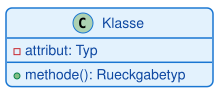 |
| Attribut | Eigenschaft bzw. Zustand eines Objekts | sichtbarkeit name: Typ |
— |
| Methode | Verhalten bzw. Fähigkeit eines Objekts | sichtbarkeit name(param: Typ): Rückgabetyp |
— |
| Sichtbarkeit public | von überall sichtbar | + |
— |
| Sichtbarkeit private | nur innerhalb der Klasse sichtbar | - |
— |
| Sichtbarkeit protected | sichtbar für die Klasse und ihre Unterklassen | # |
— |
| Vererbung (Generalisierung) | "ist-ein"-Beziehung; Unterklasse erbt von Oberklasse | Oberklasse <|-- Unterklasse |
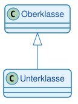 |
| Assoziation | "kennt-ein"-Beziehung; allgemeine Verbindung zweier Klassen | KlasseA --> KlasseB |
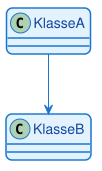 |
| Aggregation | lose "hat-ein"-Beziehung; das Teil kann auch ohne das Ganze existieren | Ganzes o-- Teil |
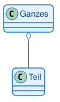 |
| Komposition | starke "enthält-ein"-Beziehung; das Teil kann nicht ohne das Ganze existieren | Ganzes *-- Teil |
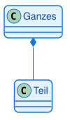 |
| Multiplizität (Kardinalität) | Anzahl der beteiligten Objekte an einer Beziehung | KlasseA "1" -- "0..*" KlasseB |
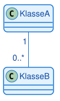 |
1. Warum brauchen wir Klassendiagramme?
1.1 Das Problem: Vom Konzept zum Code
Stellen Sie sich vor, Sie sollen eine Software für ein Banksystem entwickeln. Sie haben bereits ein Use-Case-Diagramm erstellt und wissen, was das System tun soll. Aber wie setzen Sie das um? Welche Klassen brauchen Sie? Welche Eigenschaften haben diese Klassen? Wie hängen sie zusammen?
Ohne einen Plan würden Sie direkt mit dem Programmieren beginnen und dabei: - Wichtige Klassen vergessen - Beziehungen zwischen Klassen falsch modellieren - Redundanten Code schreiben - Die Struktur ständig ändern müssen
Das Klassendiagramm löst dieses Problem. Es ist der detaillierte, technische Bauplan für Ihren Code. Es zeigt: - Welche Klassen existieren - Welche Eigenschaften (Attribute) jede Klasse hat - Welche Fähigkeiten (Methoden) jede Klasse besitzt - Wie die Klassen miteinander in Beziehung stehen
1.2 Die Brücke zwischen Anforderungen und Code
Das Klassendiagramm ist das wichtigste und am häufigsten verwendete Strukturdiagramm in der objektorientierten Programmierung. Es steht zwischen zwei Welten:
Anforderungen (Use-Case-Diagramm) - Was soll das System tun? - Welche Funktionen brauchen wir? - Aus Sicht des Anwenders
Code (Python, Java, C#) - Wie setzen wir das um? - Welche Klassen, Methoden, Attribute? - Technische Implementierung
Das Klassendiagramm übersetzt die Anforderungen in eine technische Struktur, die direkt in Code umgesetzt werden kann.
Merksatz: Das Klassendiagramm ist der Bauplan für objektorientierte Software. Es zeigt die statische Struktur des Systems: Welche Klassen existieren und wie sie zusammenhängen.
1.3 Praktischer Nutzen
Für die Planung: - Struktur vor dem Programmieren durchdenken - Fehler früh erkennen (auf dem Papier, nicht im Code) - Gemeinsames Verständnis im Team schaffen
Für die Dokumentation: - Schneller Überblick über die Systemstruktur - Wartung und Erweiterung erleichtern - Einarbeitung neuer Teammitglieder beschleunigen
Für die IHK-Prüfung: - Klassendiagramme sind zentraler Bestandteil der Projektdokumentation - Zeigen, dass die Struktur durchdacht und geplant wurde - Belegen technisches Verständnis
2. Die Anatomie einer Klasse
2.1 Das Drei-Bereiche-Modell
Eine Klasse wird im UML-Klassendiagramm als Rechteck mit drei übereinanderliegenden Bereichen dargestellt. Jeder Bereich hat eine spezifische Bedeutung:
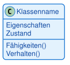
Oben: Klassenname
- Immer fett gedruckt
- Beginnt mit Großbuchstaben
- Singular (nicht Plural)
- Beispiele: Konto, Kunde, Fahrzeug
Mitte: Attribute
- Beschreiben den Zustand eines Objekts
- Die Daten, die ein Objekt speichert
- Beispiele: kontonummer, kontostand, inhaber
Unten: Methoden
- Beschreiben das Verhalten eines Objekts
- Die Operationen, die ein Objekt ausführen kann
- Beispiele: einzahlen(), abheben(), getKontostand()
2.2 Sichtbarkeiten: Wer darf was sehen?
Jedes Attribut und jede Methode hat eine Sichtbarkeit, die festlegt, von wo aus darauf zugegriffen werden darf. Die Sichtbarkeiten entsprechen exakt den Zugriffsmodifizierern aus der objektorientierten Programmierung:
| Symbol | Name | Bedeutung |
|---|---|---|
| + | public | Von überall sichtbar |
| - | private | Nur innerhalb der Klasse sichtbar |
| # | protected | Sichtbar für die Klasse und ihre Unterklassen |
Warum ist das wichtig? Sichtbarkeiten sind ein zentrales Konzept der Kapselung. Sie schützen die innere Struktur einer Klasse und definieren eine klare Schnittstelle nach außen.
Warnung: In Python gibt es keine echten private Attribute (nur Konvention mit
_oder__). In Java und C# werden Sichtbarkeiten strikt durchgesetzt. Das Klassendiagramm zeigt die konzeptionelle Sichtbarkeit, unabhängig von der Sprache.
2.3 Attribute: Der Zustand eines Objekts
Attribute beschreiben, welche Daten ein Objekt speichert. Sie werden nach folgendem Schema notiert:
Sichtbarkeit Name: Datentyp
Beispiele:
- -kontonummer: String (private, vom Typ String)
- -kontostand: double (private, vom Typ double)
- +name: String (public, vom Typ String)
Praktisches Beispiel: Konto-Klasse
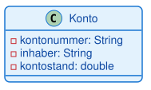
Diese Darstellung sagt uns:
- Die Klasse heißt Konto
- Sie hat drei Attribute, alle private
- kontonummer und inhaber sind Texte (String)
- kontostand ist eine Dezimalzahl (double)
2.4 Methoden: Das Verhalten eines Objekts
Methoden beschreiben, was ein Objekt tun kann. Sie werden nach folgendem Schema notiert:
Sichtbarkeit Name(Parameter: Typ): Rückgabetyp
Beispiele:
- +einzahlen(betrag: double): void (public, nimmt double entgegen, gibt nichts zurück)
- +abheben(betrag: double): boolean (public, nimmt double entgegen, gibt boolean zurück)
- +getKontostand(): double (public, keine Parameter, gibt double zurück)
Hinweis: Das
voidbei Methoden ohne Rückgabewert kann in UML-Diagrammen oft weggelassen werden. Beide Schreibweisen sind korrekt.
Vollständige Konto-Klasse mit Methoden:
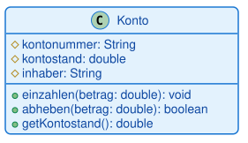
Die Klasse Konto hat drei Methoden, die alle public sind: einzahlen() erhöht den Kontostand, wenn der Betrag positiv ist; abheben() verringert den Kontostand, wenn genug Guthaben vorhanden ist, und gibt einen Erfolgswert zurück; getKontostand() ist ein Getter, der den privaten Kontostand nach außen zugänglich macht.
Merksatz: Attribute sollten private sein, Methoden public. Das ist das Prinzip der Kapselung: Der Zustand wird geschützt, das Verhalten wird nach außen angeboten.
3. Beziehungen zwischen Klassen
3.1 Warum Beziehungen wichtig sind
Ein System besteht selten aus nur einer Klasse. Die wahre Stärke eines Klassendiagramms liegt in der Visualisierung der Beziehungen zwischen den Klassen. Diese Beziehungen zeigen: - Wie Klassen zusammenarbeiten - Welche Klassen voneinander abhängen - Wie Daten zwischen Klassen fließen
Es gibt vier Haupttypen von Beziehungen: 1. Vererbung (Generalisierung) 2. Assoziation 3. Aggregation 4. Komposition
3.2 Vererbung: Die "ist-ein"-Beziehung
Das Konzept: Vererbung stellt eine "ist-ein"-Verbindung dar. Eine Unterklasse ist eine spezialisierte Version der Oberklasse und erbt deren Eigenschaften und Methoden.
Beispiele: - Ein PKW ist ein Fahrzeug - Ein Sparkonto ist ein Konto - Ein Student ist eine Person
UML-Notation: - Geschlossener, hohler Pfeil (Dreieck) - Pfeil zeigt von der Unterklasse zur Oberklasse
Visualisierung:
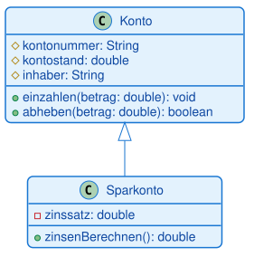
Was bedeutet das?
- Sparkonto erbt alle Attribute und Methoden von Konto
- Sparkonto hat zusätzlich ein eigenes Attribut zinssatz
- Sparkonto hat zusätzlich eine eigene Methode zinsenBerechnen()
Sparkonto erbt alle Methoden von Konto (einzahlen, abheben, getKontostand) und fügt eigene Funktionalität hinzu (zinsenBerechnen, zinsenGutschreiben).
Merksatz: Vererbung ermöglicht Wiederverwendung von Code. Die Unterklasse erbt alles von der Oberklasse und kann zusätzliche Funktionalität hinzufügen oder bestehendes Verhalten überschreiben.
Zoo-Beispiel: Vererbung, Aggregation und Assoziation kombiniert
Ein etwas größeres Beispiel zeigt, wie mehrere Beziehungen in einem Diagramm zusammenspielen: Ein
Zoo hat mehrere Tiere (Aggregation), Pfleger betreuen diese Tiere (Assoziation mit
Multiplizität), und Löwe sowie Elefant sind spezialisierte Tierarten (Vererbung).
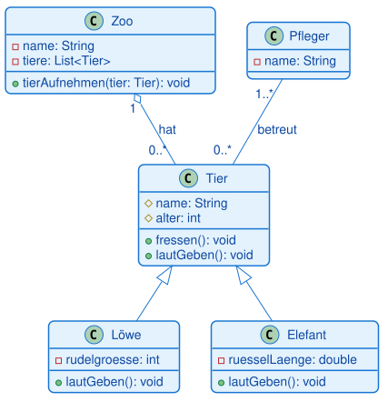
3.3 Assoziation: Die "kennt-ein"-Beziehung
Das Konzept: Eine Assoziation ist eine allgemeine Beziehung zwischen zwei Klassen. Sie bedeutet, dass Objekte der einen Klasse Objekte der anderen Klasse kennen und mit ihnen arbeiten.
Beispiele: - Ein Fahrer kennt ein Auto (fährt es) - Ein Lehrer kennt Studenten (unterrichtet sie) - Ein Kunde kennt Bestellungen (hat sie aufgegeben)
UML-Notation: - Einfache Linie zwischen den Klassen - Optional: Pfeil zeigt die Navigationsrichtung
Visualisierung:
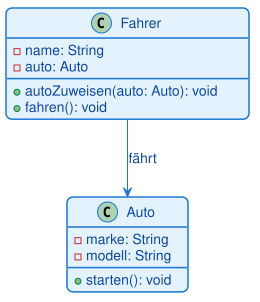
Bedeutung: Ein Fahrer kennt ein Auto und kann damit arbeiten. Umgesetzt wird das über ein Attribut auto in der Klasse Fahrer, das auf ein Auto-Objekt verweist.
3.4 Aggregation: Die lose "hat-ein"-Beziehung
Das Konzept: Aggregation ist eine spezielle Form der Assoziation. Sie drückt eine "hat-ein"-Beziehung aus, bei der das Teil auch ohne das Ganze existieren kann.
Beispiele: - Ein Team hat Spieler (löst sich das Team auf, existieren die Spieler weiter) - Eine Universität hat Studenten (verlässt ein Student die Uni, existiert er weiter) - Ein Kunde hat Konten (der Kunde kann auch ohne Konto existieren)
UML-Notation: - Linie mit hohler Raute am Ende des "Ganzen" - Die Raute zeigt auf die Klasse, die das Ganze repräsentiert
Visualisierung:
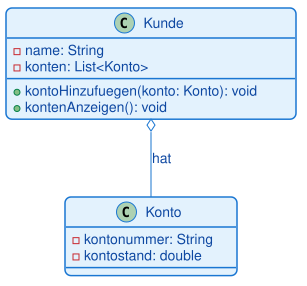
Bedeutung: Ein Kunde hat Konten, aber Kunde und Konto können unabhängig voneinander existieren.
Was ist der Unterschied zur einfachen Assoziation? Aggregation betont, dass eine Klasse Teile "besitzt", aber diese Teile können auch ohne die besitzende Klasse existieren. Das Konto kann auch ohne Kunden existieren.
3.5 Komposition: Die starke "enthält-ein"-Beziehung
Das Konzept: Komposition ist die stärkste Form der Beziehung. Sie drückt aus, dass das Teil nicht ohne das Ganze existieren kann. Wird das Ganze zerstört, werden auch die Teile zerstört.
Beispiele: - Ein Haus besteht aus Räumen (reißt man das Haus ab, sind die Räume zerstört) - Ein Auto besteht aus einem Motor (verschrottet man das Auto, ist der Motor auch weg) - Ein Dokument besteht aus Seiten (löscht man das Dokument, sind die Seiten weg)
UML-Notation: - Linie mit gefüllter Raute am Ende des "Ganzen" - Die Raute zeigt auf die Klasse, die das Ganze repräsentiert
Visualisierung:
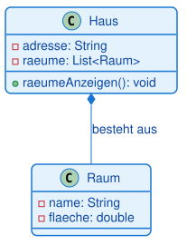
Bedeutung: Ein Haus besteht aus Räumen. Ohne Haus gibt es keine Räume. Die Räume werden beim Erstellen des Hauses erzeugt und mit ihm zusammen zerstört.
Was ist der Unterschied zur Aggregation? Bei Komposition werden die Teile (Räume) vom Ganzen (Haus) erstellt und verwaltet. Sie existieren nicht unabhängig. Bei Aggregation könnten die Teile auch außerhalb des Ganzen existieren.
Merksatz: Aggregation (hohle Raute): Das Teil kann ohne das Ganze existieren. Komposition (gefüllte Raute): Das Teil kann nicht ohne das Ganze existieren.
Analogie: Stellen Sie sich ein Auto vor: - Komposition: Die Beziehung "Auto hat Motor" ist eine Komposition. Ohne Auto macht der spezifische Motor keinen Sinn. - Aggregation: Die Beziehung "Auto hat Fahrer" ist eine Aggregation. Das Auto kann ohne Fahrer existieren und der Fahrer kann ohne Auto existieren.
3.6 Gerichtete Assoziation und Rollennamen
Eine gewöhnliche Assoziation ist eine einfache Linie und in beide Richtungen lesbar. Oft weiß man aber genauer, wer wen kennt — dann macht man die Assoziation gerichtet.
Gerichtete Assoziation (directed association): Eine Linie mit offener Pfeilspitze. Sie sagt: Nur die Klasse am Linienanfang kennt die Klasse an der Pfeilspitze, nicht umgekehrt. Man nennt das Navigierbarkeit.
Gelesen: „Der Kunde kennt seinen Warenkorb" — der Warenkorb muss den Kunden nicht kennen. Im Java-Code ist das genau ein Attribut: class Kunde { private Warenkorb warenkorb; }.
Rollennamen und Leserichtung: An die Enden einer Assoziation kann man zusätzlich schreiben:
- Rollennamen — welche Rolle die Klasse in der Beziehung spielt (z. B.
arbeitgeber/angestellteran einer Beziehung zwischenFirmaundPerson). - Einen Beziehungsnamen mit Leserichtung — ein Verb mit kleinem Dreieck (▸), das angibt, in welche Richtung man den Satz liest (z. B.
Kunde ── besitzt ▸ ── Warenkorb).
Merksatz: Einfache Linie = beide kennen sich. Pfeilspitze = nur eine Richtung kennt die andere (Navigierbarkeit). Rollennamen und Leserichtung machen ein Diagramm eindeutig lesbar.
3.7 Abhängigkeit (Dependency): Die kurzfristige „benutzt-ein"-Beziehung
Assoziation, Aggregation und Komposition sind dauerhafte Beziehungen — ein Objekt speichert das andere als Attribut. Die Abhängigkeit ist der schwächste Beziehungstyp und kurzfristig.
Notation: Eine gestrichelte Linie mit offener Pfeilspitze von der abhängigen zur benutzten Klasse.
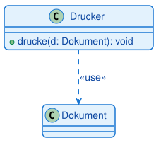
Bedeutung: Der Drucker benutzt ein Dokument nur vorübergehend — als Methodenparameter, lokale Variable oder Rückgabewert. Er speichert es nicht. „Benutzt-ein" statt „kennt-ein".
Der Unterschied zur Assoziation ist die häufigste Verwechslung des Themas:
- Assoziation (durchgezogen) — das Objekt speichert das andere als Attribut (dauerhaft). Die Ehe.
- Abhängigkeit (gestrichelt) — das Objekt benutzt das andere nur im Moment eines Methodenaufrufs (kurzfristig). Das Taxi.
In Java: private Dokument aktuellesDokument; (Attribut → Assoziation) gegenüber void drucke(Dokument d) (Parameter → Abhängigkeit).
Merksatz: Gestrichelter Pfeil = Abhängigkeit = „benutzt kurz". Sobald das Objekt als Attribut gespeichert wird, ist es eine Assoziation (durchgezogen).
3.8 Abstrakte Klassen: Bauplan ohne eigene Objekte
Eine abstrakte Klasse ist eine Klasse, von der man keine Objekte erzeugen kann. Sie dient nur als gemeinsame Oberklasse und legt fest, was alle Unterklassen können müssen — teils mit, teils ohne fertige Umsetzung.
Notation: Der Klassenname (und abstrakte Methoden) werden kursiv geschrieben, oder man kennzeichnet sie mit dem Schlüsselwort {abstract}.
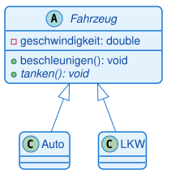
Bedeutung: Fahrzeug ist abstrakt (kursiv). Es gibt kein Objekt „ein Fahrzeug", sondern nur konkrete Auto- und LKW-Objekte. Die abstrakte Methode tanken() muss jede Unterklasse selbst umsetzen. In Java: public abstract class Fahrzeug { public abstract void tanken(); }.
Hinweis: Eine abstrakte Methode hat nur eine Signatur, keinen Rumpf — die Unterklassen liefern die Umsetzung. Eine abstrakte Klasse kann sowohl abstrakte als auch fertig umgesetzte Methoden enthalten.
3.9 Interfaces und Realisierung
Ein Interface (Schnittstelle) ist ein reiner Vertrag: eine Sammlung von Methodensignaturen ohne Umsetzung. Es sagt, was eine Klasse können muss, nicht wie. Eine Klasse kann mehrere Interfaces erfüllen — anders als bei der Vererbung, wo es (in Java) nur eine Oberklasse gibt.
Notation: Über dem Namen steht «interface». Eine Klasse, die das Interface erfüllt, wird mit einer gestrichelten Linie mit hohlem Dreieckspfeil angebunden — das ist die Realisierung (realization/implementation).
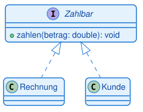
Bedeutung: Rechnung und Kunde realisieren das Interface Zahlbar, das heißt: Beide setzen die Methode zahlen() um. In Java: class Rechnung implements Zahlbar.
Vererbung vs. Realisierung — beide nutzen ein Dreieck, unterscheiden sich aber in der Linie:
| Vererbung (Generalisierung) | Realisierung (Interface) | |
|---|---|---|
| Linie | durchgezogen | gestrichelt |
| Pfeilspitze | hohles Dreieck | hohles Dreieck |
| Bedeutung | „ist ein" (erbt Umsetzung) | „erfüllt Vertrag" (liefert Umsetzung) |
| Java | extends |
implements |
Prüfungstipp (IHK): Die Unterscheidung durchgezogenes Dreieck (Vererbung,
extends) gegen gestricheltes Dreieck (Realisierung,implements) wird gern abgefragt. Merke: gestrichelt = „nur ein Versprechen" (Interface), durchgezogen = „echte Verwandtschaft" (Oberklasse).
3.10 Übersicht: Welche Beziehung wann?
Alle Beziehungstypen des Klassendiagramms auf einen Blick — geordnet von der stärksten Bindung (Vererbung) zur schwächsten (Abhängigkeit):
| Beziehung | Notation | Leitfrage | Java |
|---|---|---|---|
| Vererbung / Generalisierung | durchgezogene Linie, hohles Dreieck △ | ist-ein? | extends |
| Realisierung | gestrichelte Linie, hohles Dreieck △ | erfüllt-Vertrag? | implements |
| Komposition | durchgezogene Linie, gefüllte Raute ◆ | besteht-aus (fest)? | Attribut, Teil stirbt mit dem Ganzen |
| Aggregation | durchgezogene Linie, leere Raute ◇ | hat-ein (locker)? | Attribut, Teil überlebt |
| Assoziation | durchgezogene Linie (ggf. Pfeilspitze) | kennt-ein (dauerhaft)? | Attribut |
| Abhängigkeit | gestrichelte Linie, offene Pfeilspitze | benutzt-ein (kurz)? | Parameter / lokale Variable |
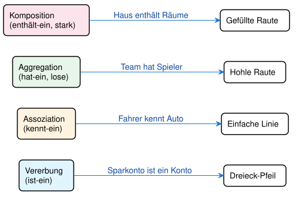
Korrekte Pfeile für Klassendiagramme
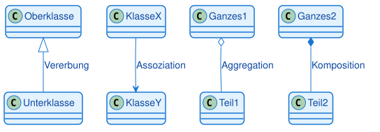
Hinweis: In der Praxis ist die Unterscheidung zwischen Aggregation und Komposition oft nicht eindeutig. Wichtig ist, dass Sie die Konzepte verstehen und begründen können, warum Sie eine bestimmte Beziehung gewählt haben.
Beispiel mit allen 4 Beziehungen
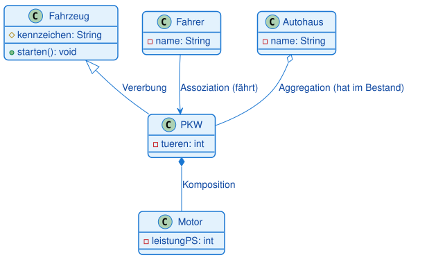
4. Multiplizitäten: Wie viele Objekte sind beteiligt?
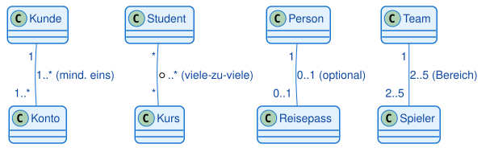
4.1 Das Konzept
Multiplizitäten (auch Kardinalitäten genannt) geben an, wie viele Objekte an einer Beziehung beteiligt sind. Sie stehen an den Enden der Beziehungslinien.
Warum sind Multiplizitäten wichtig? Sie beantworten Fragen wie: - Kann ein Kunde mehrere Konten haben? - Muss ein Konto genau einem Kunden gehören? - Kann ein Student in mehreren Kursen sein?
4.2 Die wichtigsten Multiplizitäten
| Notation | Bedeutung |
|---|---|
| 1 | Genau eins |
| * | Null oder viele (beliebig viele) |
| 0..1 | Null oder eins (optional) |
| 1..* | Eins oder viele (mindestens eins) |
| 2..5 | Zwischen 2 und 5 |
4.3 Praktisches Beispiel: Kunde und Konto
Anforderung: - Ein Kunde kann ein oder mehrere Konten haben - Ein Konto gehört genau einem Kunden
Visualisierung:
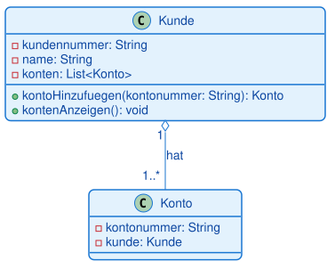
Bedeutung:
- Links (Kunde): 1 bedeutet, dass ein Konto genau einem Kunden gehört
- Rechts (Konto): 1..* bedeutet, dass ein Kunde mindestens ein Konto haben muss
Die Beziehung ist bidirektional: Der Kunde kennt seine Konten (Multiplizität 1..*), und jedes Konto kennt seinen Kunden (Multiplizität 1).
4.4 Weitere Beispiele
Student und Kurs (viele-zu-viele):
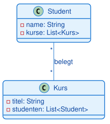
Bedeutung: - Ein Student kann in beliebig vielen Kursen sein (0 oder mehr) - Ein Kurs kann beliebig viele Studenten haben (0 oder mehr)
Person und Reisepass (eins-zu-null-oder-eins):
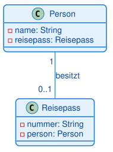
Bedeutung: - Eine Person kann keinen oder einen Reisepass haben (optional) - Ein Reisepass gehört genau einer Person
Warnung: Multiplizitäten werden oft falsch herum gelesen. Die Zahl steht immer auf der Seite, die angibt, wie viele Objekte dieser Klasse an der Beziehung beteiligt sind.
5. Vollständiges Beispiel: Banksystem
5.1 Das Szenario
Wir modellieren ein einfaches Banksystem mit folgenden Anforderungen: - Es gibt Kunden und Konten - Ein Kunde kann mehrere Konten haben - Ein Konto gehört genau einem Kunden - Es gibt verschiedene Kontotypen: Girokonto und Sparkonto - Beide Kontotypen erben von einer Basisklasse Konto
5.2 Das Klassendiagramm
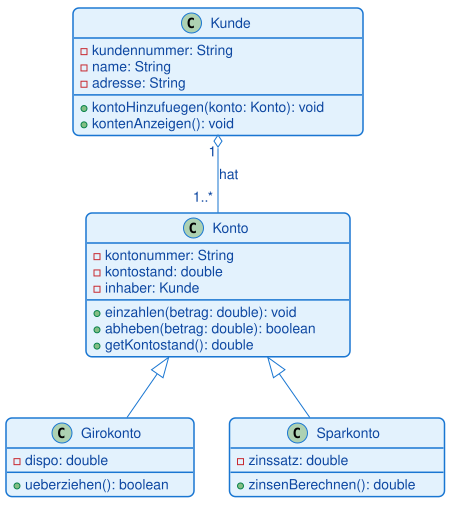
Dieses Beispiel zeigt das Zusammenspiel mehrerer Konzepte: Vererbung (Girokonto und Sparkonto erben von Konto und erweitern die Funktionalität), Aggregation (Kunde hat mehrere Konten, Multiplizität 1..*), Polymorphismus (beide Kontotypen können als Konto behandelt werden), Kapselung (Attribute sind private) und Überschreiben (Girokonto überschreibt abheben(), um den Dispositionskredit zu berücksichtigen).
6. Vom Klassendiagramm zum Code
6.1 Der Übersetzungsprozess
Ein Klassendiagramm ist eine Blaupause für Code. Die Übersetzung folgt klaren Regeln, die sich in jeder objektorientierten Sprache wiederfinden — hier am Beispiel Java:
| UML-Element | Java |
|---|---|
Klasse Konto |
class Konto { } |
Attribut -kontostand: double |
private double kontostand; |
Methode +einzahlen(betrag: double) |
public void einzahlen(double betrag) { } |
Vererbung Sparkonto ──▷── Konto |
class Sparkonto extends Konto { } |
Assoziation Kunde ──── Konto |
private Konto konto; (Referenz als Attribut) |
6.2 Praktische Tipps
Tipp 1: Beginne mit den Basisklassen Implementiere zuerst die Klassen ohne Abhängigkeiten, dann die abgeleiteten Klassen.
Tipp 2: Teste jede Klasse einzeln Bevor du Beziehungen implementierst, stelle sicher, dass jede Klasse für sich funktioniert.
Tipp 3: Nutze das Diagramm als Dokumentation Halte das Klassendiagramm aktuell, wenn sich der Code ändert.
Tipp: Verwende Tools wie PlantUML, draw.io oder Lucidchart, um Klassendiagramme zu erstellen. Diese Tools können oft auch Code aus Diagrammen generieren.
Typische Fehler
- Aggregation und Komposition verwechselt — leere statt gefüllte Raute (oder umgekehrt). Folge: falsche Aussage über die Lebensdauer des Teils. Raute-Test: Stirbt das Teil mit dem Ganzen?
- Assoziation und Abhängigkeit verwechselt — durchgezogene statt gestrichelte Linie. Folge: dauerhafte statt kurzfristige Beziehung. Als Attribut gespeichert = Assoziation; nur im Methodenaufruf benutzt = Abhängigkeit.
- Vererbung statt Teil-Beziehung — „Motor ist ein Auto". Folge: falsches Modell. ist-ein-Test: nur bei echter „ist ein"-Beziehung Vererbung, sonst Aggregation/Komposition.
- Vererbung und Realisierung verwechselt — durchgezogenes vs. gestricheltes Dreieck. Folge:
extendsundimplementsvermischt. - Multiplizität falsch herum gelesen — Ursache: Seiten vertauscht. Die Zahl steht bei der Klasse, von der aus gezählt wird; über Kreuz lesen.
- Alles public — keine
--Attribute. Folge: Kapselung verletzt. Attribute privat, Zugriff über öffentliche Methoden.
7. Zusammenfassung
7.1 Kernkonzepte
Klassendiagramm: - Zeigt die statische Struktur eines Systems - Visualisiert Klassen, Attribute, Methoden und Beziehungen - Ist der wichtigste Diagrammtyp in der OOP
Anatomie einer Klasse:
- Oben: Klassenname (fett)
- Mitte: Attribute (Zustand)
- Unten: Methoden (Verhalten)
- Sichtbarkeiten: + public, - private, # protected
Beziehungen: - Vererbung (△): "ist-ein" (Sparkonto ist ein Konto) - Assoziation (─): "kennt-ein" (Fahrer kennt Auto) - Aggregation (◇): "hat-ein" lose (Team hat Spieler) - Komposition (◆): "enthält-ein" stark (Haus enthält Räume)
Multiplizitäten:
- 1: Genau eins
- *: Beliebig viele
- 0..1: Optional
- 1..*: Mindestens eins
7.2 Praktische Faustregeln
-
Beginne mit den Hauptklassen - Welche Substantive kommen in den Anforderungen vor? - Diese werden oft zu Klassen
-
Identifiziere Beziehungen - Welche Klassen arbeiten zusammen? - Gibt es "ist-ein" oder "hat-ein" Beziehungen?
-
Füge Details hinzu - Welche Attribute braucht jede Klasse? - Welche Methoden sind nötig?
-
Prüfe die Multiplizitäten - Wie viele Objekte sind beteiligt? - Sind Beziehungen optional oder verpflichtend?
-
Halte es einfach - Nicht jedes Detail muss im Diagramm sein - Fokus auf die wichtigsten Klassen und Beziehungen
7.3 Wichtige Erkenntnisse
- Klassendiagramme sind Werkzeuge zur Planung, nicht zur Dokumentation jedes Details
- Ein gutes Klassendiagramm zeigt die Struktur auf einen Blick
- Die Unterscheidung zwischen Aggregation und Komposition ist oft Interpretationssache
- Klassendiagramme sind lebendig: Sie entwickeln sich mit dem Projekt
- In der IHK-Prüfung sind Klassendiagramme oft der Kern der Projektdokumentation
Merksatz: Ein Klassendiagramm ist wie ein Stadtplan: Es zeigt die wichtigsten Straßen und Gebäude, aber nicht jedes Detail. Es hilft bei der Orientierung und Planung, ersetzt aber nicht die Erkundung vor Ort (den Code).
Glossar
| Begriff | Kurzerklärung |
|---|---|
| Klassendiagramm (class diagram) | UML-Strukturdiagramm, das Klassen, ihre Attribute, Methoden und Beziehungen zeigt |
| Klasse (class) | Bauplan für Objekte; im Diagramm als Rechteck mit drei Bereichen dargestellt |
| Objekt (object) | Konkrete Instanz einer Klasse zur Laufzeit |
| Attribut (attribute) | Eigenschaft bzw. Zustand eines Objekts, notiert im mittleren Bereich der Klasse |
| Methode (method / operation) | Verhalten bzw. Fähigkeit eines Objekts, notiert im unteren Bereich der Klasse |
| Sichtbarkeit (visibility) | Zugriffsrecht auf ein Attribut oder eine Methode: + public, - private, # protected |
| public | Von überall sichtbar und aufrufbar (+) |
| private | Nur innerhalb der eigenen Klasse sichtbar (-) |
| protected | Sichtbar für die eigene Klasse und ihre Unterklassen (#) |
| Kapselung (encapsulation) | Prinzip, den Zustand eines Objekts zu schützen und nur über eine definierte Schnittstelle zugänglich zu machen |
| Vererbung / Generalisierung (inheritance) | "ist-ein"-Beziehung; eine Unterklasse erbt Attribute und Methoden einer Oberklasse |
| Oberklasse (superclass / base class) | Allgemeinere Klasse, von der geerbt wird |
| Unterklasse (subclass / derived class) | Spezialisierte Klasse, die von einer Oberklasse erbt |
| Assoziation (association) | Allgemeine "kennt-ein"-Beziehung zwischen zwei Klassen |
| Aggregation | Lose "hat-ein"-Beziehung; das Teil kann unabhängig vom Ganzen existieren (hohle Raute) |
| Komposition (composition) | Starke "enthält-ein"-Beziehung; das Teil kann nicht ohne das Ganze existieren (gefüllte Raute) |
| Multiplizität / Kardinalität (multiplicity) | Angabe, wie viele Objekte an einer Beziehung beteiligt sind, z. B. 1, *, 0..1, 1..* |
| Navigationsrichtung / Navigierbarkeit | Optionaler Pfeil an einer Assoziation, der anzeigt, von welcher Klasse aus die andere erreichbar ist |
| Gerichtete Assoziation (directed association) | Assoziation mit offener Pfeilspitze; nur die Klasse am Anfang kennt die am Pfeilende |
| Rollenname (role name) | Beschriftung an einem Assoziationsende, die die Rolle der Klasse in der Beziehung benennt |
| Abhängigkeit (dependency) | Schwächste, kurzfristige Beziehung ("benutzt-ein"); gestrichelte Linie mit offener Pfeilspitze; entsteht z. B. durch einen Methodenparameter |
| Abstrakte Klasse (abstract class) | Klasse, von der keine Objekte erzeugt werden können; Name kursiv oder mit {abstract}; dient als gemeinsame Oberklasse |
| Abstrakte Methode | Methode mit Signatur, aber ohne Umsetzung; muss von jeder Unterklasse implementiert werden |
| Interface / Schnittstelle | Reiner Vertrag aus Methodensignaturen ohne Umsetzung; mit «interface» gekennzeichnet; eine Klasse kann mehrere erfüllen |
| Realisierung (realization) | Beziehung "Klasse erfüllt Interface"; gestrichelte Linie mit hohlem Dreieck (in Java: implements) |
| Polymorphismus (polymorphism) | Fähigkeit, Objekte unterschiedlicher (aber verwandter) Klassen über denselben Typ anzusprechen |
| Konstruktor (constructor) | Spezielle Methode, die beim Erzeugen eines Objekts aufgerufen wird (in Java: eine Methode mit demselben Namen wie die Klasse) |
| Getter | Methode, die den Wert eines (meist privaten) Attributs nach außen zugänglich macht |
| Use-Case-Diagramm | Vorgelagertes UML-Diagramm, das die Anforderungen aus Anwendersicht beschreibt |